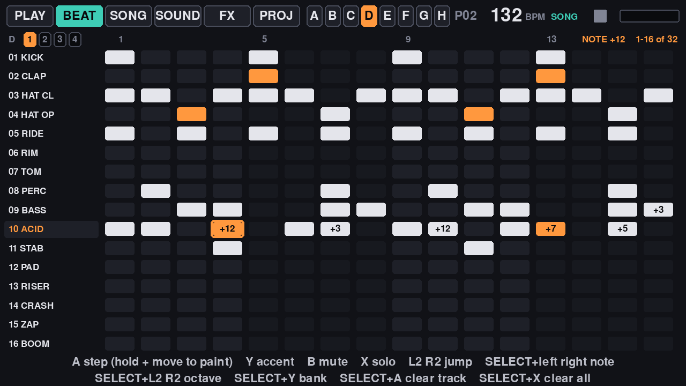
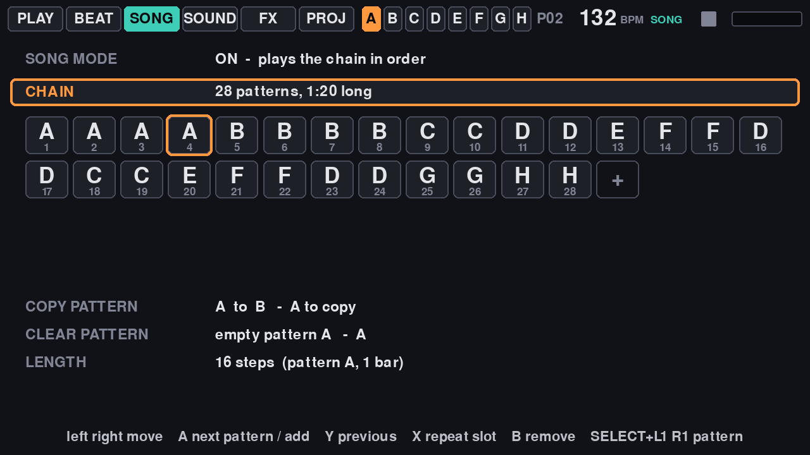
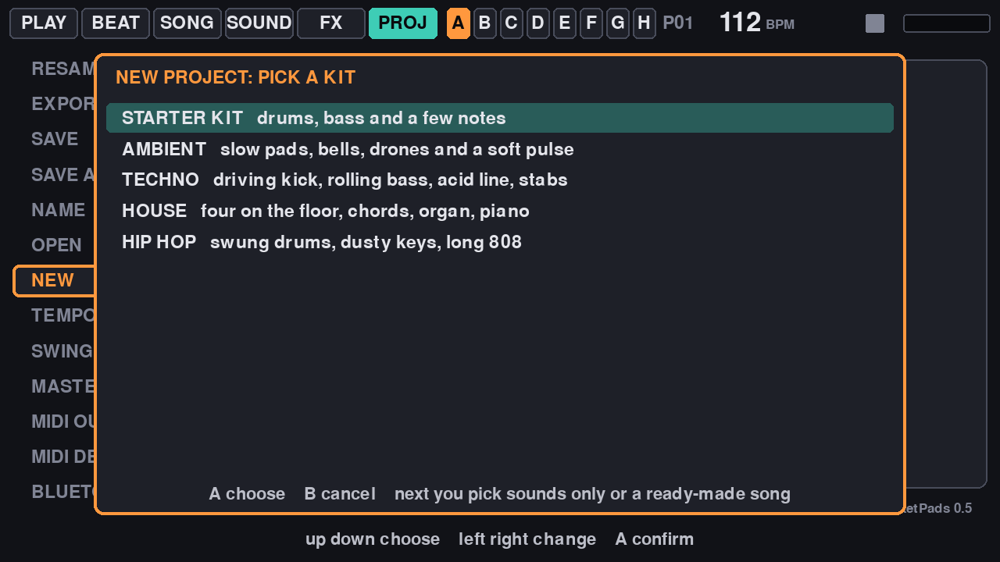
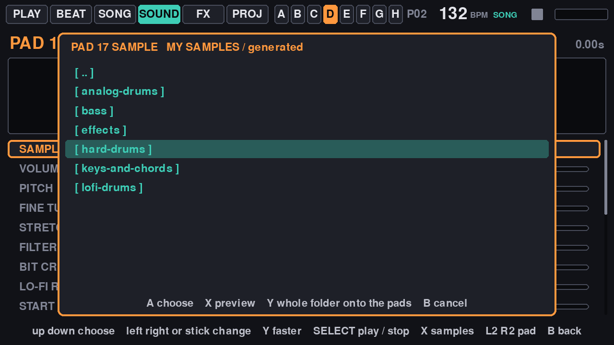
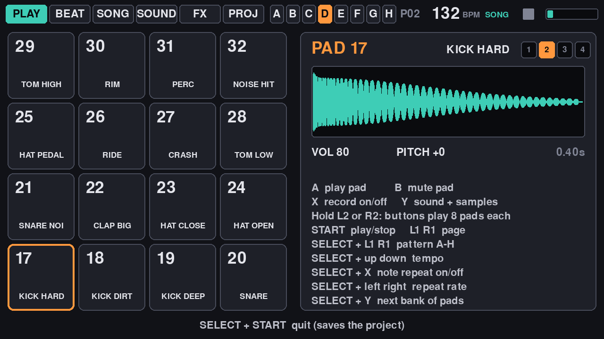
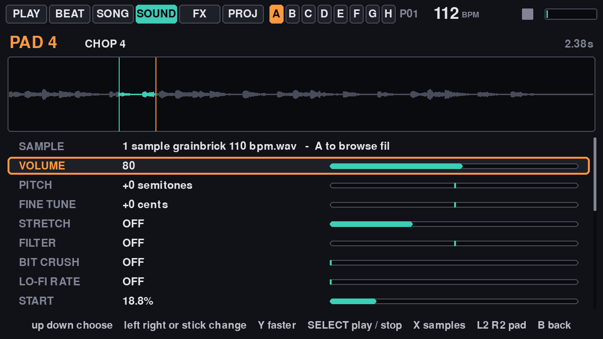
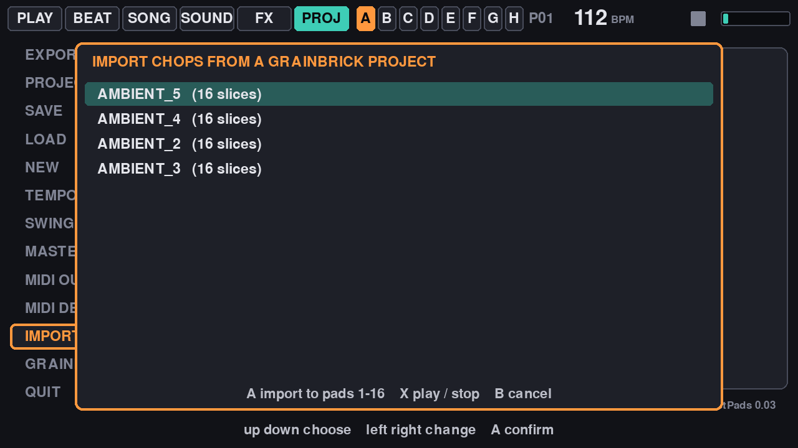
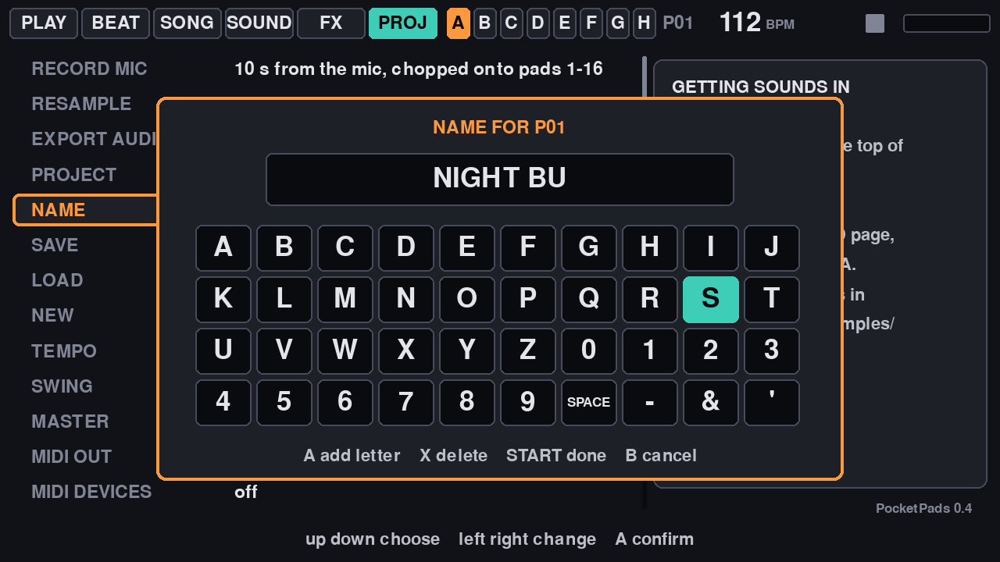
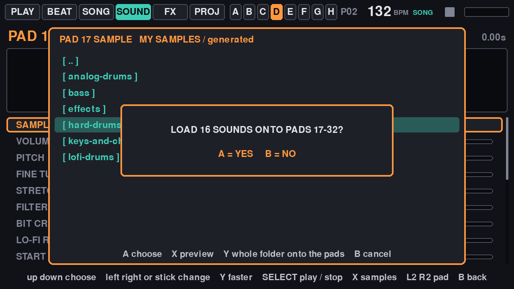

Fourteen short tutorials, how to look after your projects and sounds, and a reference for every setting and button in PocketPads 0.4.
New to PocketPads? The overview says what it is in a minute. This page is the instructions: everything, one job at a time. The tutorials build on each other, but each one also works by itself.
The buttons and the screen
Button names are the ones printed on the TrimUI Smart Pro: A is the right-hand face button and B is the bottom one.
D-padMoves the cursor: across pads, steps, or up and down a list. In lists, left and right change the selected value.
A, B, X, YA is "do it" or "yes". B is "back", "no" or mute. X and Y change with the page; the line at the bottom of the screen always says what they do.
L1 and R1Previous and next page.
L2 and R2Held on the PLAY page they turn the buttons into drum pads. Elsewhere they jump: four steps, or to the next pad.
STARTPlays and stops the beat, on every page.
SELECTA shift key. Held with another button it reaches the second set of controls, such as changing pattern or bank.
Left stickPlays effects on the FX page. On the BEAT page it changes the tempo.
Right stickA data wheel on the SOUND and PROJ pages: push sideways to change the selected value. On the FX page it plays effects, and on the BEAT page it sets the selected pad's volume.
QuestionsAnything that would replace or erase work asks first. A is yes, B is no.
The bar along the top
From left to right: the six pages, with the one you are on lit; the eight patterns A to H, with the current one lit; the project slot (P01 to P16); the tempo; a label that reads SONG when song mode is on, or REC in red while recording; and the output meter.
The line along the bottom
Every page lists its own controls at the bottom of the screen, and they change with what is selected. If you forget a button, look there first.
Tutorials
Each one is a handful of steps and takes a few minutes. Nothing here can damage anything: a new project always starts in an empty slot, and the starter kit can be brought back at any time.
1
Your first five minutes
Hear the starter kit, find your way around the six pages, and quit safely.
Open PocketPads from the Ports menu. It starts on the PLAY page with a kit of drums and bass on pads 1 to 16.
Press START. A demo beat plays. Press START again to stop it.
Move around the pads with the D-pad and press A to hear each one. The right-hand panel shows the selected pad's name, waveform, volume and pitch.
Press R1 to walk through the pages: PLAY, BEAT, SONG, SOUND, FX, PROJ. L1 goes back.
On any page, hold SELECT and press UP or DOWN to change the tempo while the beat plays.
To leave, hold SELECT and press START, or choose QUIT on the PROJ page. The project is saved as you go out.
The PLAY page. The right-hand panel doubles as a reminder of the buttons.
2
Draw a beat
Fill in a pattern on the step grid: kick, snare, hats, then accents and swing.
Hold SELECT and press R1 twice to move to pattern C, which is empty in a new project (A and B hold the demo beat). The lit letter in the top bar shows where you are.
Go to the BEAT page. Each row is a pad and each column is a step; sixteen steps make one bar.
With the cursor on row 1 (the kick), press A on steps 1, 5, 9 and 13. R2 jumps four steps at a time, which makes this quick.
Press DOWN to the snare row and put steps on 5 and 13.
Go down to the closed hi-hat. Hold A on step 1 and keep it held while you press RIGHT: every step you pass is filled. Holding A on a filled step and moving wipes them instead.
Press START to hear it. The tinted column is the playhead.
While it plays, push the left stick to speed the beat up or slow it down, and the right stick to turn the row you are on up or down. A message shows the new value.
Move to a hat step and press Y to accent it. Accented steps are orange and play louder; try every other one.
Go to the PROJ page, choose SWING and raise it to about 58. 50 is straight and 66 is a full triplet shuffle.
White steps play normally. Orange steps are accented.
Too busy?B mutes the row you are on and X solos it, so you can check one part at a time. SELECT+A clears the row; SELECT+X clears the whole pattern.
3
Play a beat in by hand
Finger-drum on the buttons and record what you play into the pattern, with note repeat for rolls.
On the PLAY page, hold L2. Pads 1 to 8 show which button plays each one: the four D-pad directions play pads 1 to 4 and YXAB play pads 5 to 8. Holding R2 does the same for pads 9 to 16.
Let go of the trigger and press X. The message reads RECORD ON and a red REC appears in the top bar.
Press START, hold L2 and play. Each hit is written to the nearest step, and you hear it come round again on the next pass.
Keep adding parts over as many passes as you like. Press X again (with the trigger released) to turn recording off.
For a roll, hold SELECT and press X to switch note repeat on. Now a held pad retriggers in time for as long as you hold it. SELECT+LEFT or RIGHT picks the rate, from 1/4 to 1/32 with triplets.
Fix mistakes on the BEAT page: move to the stray step and press A to remove it.
With L2 held, each pad shows its button.
4
Write a bass line
Give each step its own note, so one pad plays a tune.
On the BEAT page, go down to a bass pad (rows 13 and 14 in the starter kit).
Put steps where the notes should fall with A.
On one of those steps, hold SELECT and press RIGHT. The step moves up a semitone, shows its note as a number such as +3, and plays so you can hear it. LEFT goes down.
SELECT+R2 jumps up an octave and SELECT+L2 down one. A step can go two octaves either way.
Pressing SELECT+RIGHT on an empty step fills it and sets its note in one go.
The number in the top right of the grid is the note of the step under the cursor.

The numbered steps on row 10, an acid bass, are notes above the pad's own pitch.
Good to know. Step notes work on sounds up to 12 seconds long. The pad's own PITCH on the SOUND page moves the whole line up or down.
5
Turn patterns into a song
Make variations of a pattern, then chain them in the order they should play.
Start with a pattern you like in A. Go to the SONG page and choose COPY PATTERN. Left and right pick where the copy goes; press A. You are now on the copy.
Change the copy on the BEAT page: take the kick out for a breakdown, add a fill, bring in another sound.
Repeat for as many sections as you need. There are eight patterns, A to H.
Want a longer section? LENGTH on the SONG page runs from 16 to 128 steps, a bar at a time. Hold Y while changing it to move one step at a time.
Choose CHAIN. On the + slot, A adds the current pattern. On a filled slot, A and Y step it through the patterns, X repeats the slot and B removes it.
Build the order, for example A A B A C. The row shows how long the song is.
Choose SONG MODE and press A to turn it on. The top bar shows SONG. START now plays the chain from the top and loops it; the playing slot is lit.

A chain of 28 slots. The outlined slot is the one being edited.
Song mode on or off? With it off, PocketPads loops one pattern and SELECT+L1 / R1 switches pattern at the end of the bar, which is how you jam. With it on, patterns follow the chain. Turn it off to work on one section.
6
Start from a style
Open a ready-made ambient, techno, house or hip hop project and make it your own.
On the PROJ page choose NEW and press A.
Pick a style from the list and press A, then A again to confirm. Your open project is saved first, and the new one starts in the next empty slot.
The first time you pick a style its sounds are made on the spot, which takes a few seconds.
Press START. Song mode is already on, so the whole song plays.
Look at how it is built: the SONG page shows the chain, and the BEAT page shows each pattern as it comes round.
Make changes. Swap a sound on the SOUND page, redraw a drum part, change the tempo, reorder the chain.
Give it a name: NAME on the PROJ page (see Projects).

NEW offers the starter kit or one of four styles.
7
Load your own sounds and kits
Copy files to the handheld, put one on a pad, or load a whole folder as a kit.
Copy your sound files into the samples folder on the handheld, in folders of your own if you like:
/userdata/roms/ports/pocketpads/samples/
WAV, MP3, FLAC, OGG, M4A, AAC, AIFF and Opus files all work.
In PocketPads, select the pad you want to fill, go to the SOUND page and press X. The sample picker opens.
Move with UP and DOWN (L2 and R2 jump eight). A on a folder opens it, and A on [ .. ] goes back up.
On a file, press X to hear it without loading it, and A to put it on the pad.
For a whole kit: first choose which bank it should fill with SELECT+Y. Then, in the picker, highlight a folder and press Y. PocketPads asks, then puts the folder's first sixteen sounds on the sixteen pads of that bank, in name order.
To hear a sound in your beat before choosing it: press R1 in the picker to turn on "in the beat". The beat starts, and whichever file you stop on takes the pad's place in the pattern. Move down the list to audition one after another.
You can also get here from the BEAT page: press LEFT past step 1 to land on a row's name, then A.
B closes the picker and leaves the pad as it was.

Folders are in brackets. Y on a folder loads it as a kit.

A kit loaded onto bank 2. Bank 1 still holds the first kit.
Four banks, four kits. A project has 64 pads in four banks of sixteen. Loading a folder only touches the bank on screen, so drums can live in bank 1, bass in bank 2 and so on. Number your files (01 kick.wav, 02 snare.wav) to decide which pad each lands on. Ready-made kits are in the optional sound packs.
8
Record with the microphone
Record ten seconds of anything and have it cut into pads automatically.
Choose the bank the recording should go to with SELECT+Y. Recording replaces all sixteen pads of that bank.
On the PROJ page choose RECORD MIC, press A and confirm.
Make your sounds: claps, taps on the desk, your voice, a few notes on an instrument. Leave a short gap between them. A level meter shows what the microphone hears.
It stops after ten seconds, or press A to stop early.
PocketPads finds each hit and puts one on each pad, up to sixteen, named CHOP 1, CHOP 2 and so on. You land on the PLAY page ready to try them.
Tidy each one on the SOUND page: trim with START and END, and add a short FADE OUT if it clicks at the end.
The recording is kept as a WAV file in samples/recorded/, so you can load it again later or chop it a different way.
9
Chop a loop and fit it to the tempo
Cut a long sample into playable pieces, or make a loop last exactly one bar.
Load a loop or a longer sample onto a pad (tutorial 7).
To make it loop in time: on the SOUND page go down to FIT TO TEMPO, choose a length with left and right (1 beat, 2 beats, 1 bar, 2 bars or 4 bars) and press A.
FIT STYLE, the row above, decides how. Keep pitch stretches the loop, so it stays in key. Change pitch speeds it up or slows it down, like an old sampler.
Set MODE to LOOP if the pad should keep going round: one hit starts it and the next stops it.
To cut it up: go to CHOP and choose how with left and right:
At hits finds each drum hit.
4, 8 or 16 equal cuts it into even pieces.
Live plays the sample; tap A wherever a new pad should begin. B finishes and X cancels.
Press A and confirm. The pieces replace the pads of the bank on screen, starting from its first pad.
Play the pieces in a new order on the PLAY page, or draw them into a pattern.
Chopping live: each tap of A drops a slice point.

Each chopped pad plays one lit section of the same file.
Chop the part you want. Chopping works on the section between START and END, so trim the pad first to chop just one bar of a long recording.
10
Play one sound as a melody
Spread a single sound across sixteen pads, a semitone apart, and play it like a keyboard. Or turn it into chords.
Switch to an empty bank with SELECT+Y, because this fills all sixteen pads of the bank.
Load a short, pitched sound onto one pad: a bass note, a bell, a vocal stab. The pad you choose becomes the root note. Pad 1 gives you fifteen notes above it; a pad in the middle gives notes above and below.
On the SOUND page go down to the SPREAD row, second from last, press A and confirm.
Every pad in the bank now plays the same sound one semitone higher than the pad before it. Play them on the PLAY page with L2 and R2 held, or from a MIDI controller.
Each pad is still its own pad, so each can be drawn into the pattern.
Chords
One pad as a chord. On the SOUND page set the CHORD row to major, minor, 7th or one of the others. One hit now plays the whole chord. On the BEAT page, step notes (SELECT+LEFT or RIGHT) move that chord up and down, so one row can play a progression.
The chords of a key across the pads. Go to the last row, KEY CHORDS, choose MAJOR KEY or MINOR KEY with left and right, press A and confirm. The bank's sixteen pads become the chords of that key, named by their place in it (I, IV, V, VI m and so on): the seven plain chords first, then 7ths and suspended chords. The pad's own pitch is the key note, so set PITCH first to change key. It works on sounds up to 6 seconds, with STRETCH off.
Spread or step notes? Spread gives you sixteen pads to play by hand. Step notes (tutorial 4) keep the sound on one pad and one row. Spread works on sounds up to 20 seconds.
11
Perform with effects and resample
Play the whole mix with the buttons and sticks, then record the result onto a pad.
Start the beat and go to the FX page.
Hold a face button: A stutters the last slice of the beat, B slows everything to a stop like a tape, X closes a low-pass filter and Y thins the mix with a high-pass. Let go and the sound snaps back.
Push the sticks. The further you push, the more effect you get. To begin with, the left stick is filter (sideways) and fade out (up and down), and the right stick is tempo (sideways) and echo (up and down).
Change what a stick does with the four STICK rows at the bottom of the list: filter, tempo, pan, fade out, echo, reverb, stutter, crush, tape stop, or off.
Shape the shared effects in the rows above: COMPRESSOR glues the mix together, DELAY TIME and DELAY FEEDBACK set the echo, REVERB SIZE sets the room. How much each pad sends into them is set per pad on the SOUND page.
To keep a performance: select an empty pad, then on the PROJ page choose RESAMPLE and confirm. The beat starts and you are taken to the FX page.
Perform. Press START to finish. Everything you heard, effects included, is now a sample on that pad.
The stick diagrams show what each direction does and how far it is pushed.
Resampling records up to a minute and saves the take in samples/resampled/. It is also the way to free up pads: resample a busy drum pattern to one pad, then reuse the others.
12
Export a finished track
Save the song as a WAV file you can copy off the handheld.
Decide what to export. With song mode on, the export is the whole chain, once through. With it off, it is the current pattern four times.
On the PROJ page choose EXPORT AUDIO, press A and confirm. The beat stops and a progress bar shows how far it has got; nothing plays out loud while it works.
The file is saved in samples/exports/, named after the project slot, what was exported and the date, for example P02 SONG 2026-11-25 14-30.wav.
Copy it to a computer from that folder. It is also in the sample picker, so a finished track can go straight back onto a pad.
What is in the file. The pads, their effects, the delay, reverb and compressor, at the MASTER level. Things you do by hand on the FX page are not part of an export; use resampling to capture those. An export is five minutes at most.
13
Use a MIDI controller
Play the pads from a USB controller, turn its knobs, or drive a synth from the sequencer.
Plug a USB MIDI controller into the handheld. PocketPads connects by itself, with nothing to set up.
Check the MIDI DEVICES row at the bottom of the PROJ page. It names what was found.
Hit the controller's pads or keys. They play the sixteen pads of the bank on screen, harder hits louder. Note C1 (number 36) is the bank's first pad, and the sixteen pads repeat every sixteen notes, so it works wherever your controller's pads start.
Change bank on the handheld with SELECT+Y and the controller plays the new bank.
Turn a knob. The first eight knobs you touch become, in the order you first turn them, the selected pad's volume, pitch, filter, delay, reverb, start, end and fade out. A message names the setting as you turn it.
Start and stop buttons on a controller start and stop the beat.
To record from the controller, turn record on (X on the PLAY page) and start the beat, just as with the buttons.
To play a synth from PocketPads: set MIDI OUT on the PROJ page to a channel from 1 to 16. Every pad that sounds also sends a note, with its step note, and clock, start and stop go out to keep other gear in time.
Still new. MIDI has been tried with one USB controller's pads. Bluetooth MIDI is not built. If your controller is not found, see Fixing problems.
14
Trade sounds with GrainBrick
GrainBrick is a separate, free granular sampler for the same handheld. If it is installed next to PocketPads, the two share sounds.
PocketPads records and chops on its own, but GrainBrick goes much further with sampling. GrainBrick saves recordings as WAV files and keeps slice points in its project files, and PocketPads reads those directly. GrainBrick itself is not modified. The two rows used here, IMPORT CHOPS and GRAINBRICK, only appear on the PROJ page when GrainBrick is installed.
Hop over. On the PROJ page choose GRAINBRICK and confirm. Your project is saved and GrainBrick opens.
Sample and chop. Record or load a sound, slice it on GrainBrick's RHYTHM page, and save the GrainBrick project.
Come back. Quit GrainBrick with START+SELECT. You land straight back in PocketPads.
Import the chops. Choose the bank with SELECT+Y, then IMPORT CHOPS. Pick the project from the list (X plays its sample first) and press A. Its slices land on the sixteen pads of the bank on screen, and your patterns are kept.
Single sounds work too. The sample picker has GrainBrick's recordings and samples folders next to your own.
Slices are of the original sample. You get the raw audio between the slice points, without GrainBrick's granular processing or effects. To capture the processed sound, record it in GrainBrick, then load that recording onto a pad.
Sixteen slices at most. If a GrainBrick project has more, the first sixteen are imported.
Save in GrainBrick first. The import reads saved project files, so unsaved chops will not appear.
Switching takes a few seconds each way, because each app has to start up.

GrainBrick projects that contain slices, newest first.After import, each pad plays one slice.
Managing your work
Where things are kept, how to save, copy, name and remove them, and how to add the optional sounds.
P
Projects
A project is everything you can hear: the 64 pads and their settings, eight patterns, the song chain, tempo, swing and effects. There are sixteen slots, P01 to P16.
When your work is saved
When you quit, with SELECT+START or the QUIT row.
When you start a new project, name a project, export audio or hop to GrainBrick.
When you choose SAVE.
It is not saved every few minutes. If the handheld is switched off or runs out of battery while PocketPads is open, changes since the last save are lost, so use SAVE now and then in a long session.
Everyday jobs
To
Do this on the PROJ page
Save
SAVE, then A. It always saves the project you have open, into its own slot; the row shows which one.
Open another project
OPEN, then A, and pick from the list of saved projects. Save first: opening another project drops unsaved changes.
Start a new one
NEW. The open project is saved and the new one takes the next empty slot.
Name it
NAME, then A. Move over the letters; A adds one, X deletes, START finishes, B cancels. Up to fourteen characters.
Make a copy
SAVE A COPY, then A. The copy goes in the first empty slot and you carry on working in it; the original stays as it was last saved. Use this before a big change you may regret.
See what is in a slot
OPEN lists every saved project with its slot and name.
Delete one
There is no delete in the app. Remove its file, for example projects/P07.json, from the card.
The PROJ page. SAVE names the project it will save.

Naming a project with the letter grid.
Projects point at sounds; they do not contain them. A project file lists which sample each pad uses. If you delete or move a sample, pads that used it come up empty, so keep the files a project needs. To move a project to another handheld, copy its .json file and the samples it uses, in the same folders.
F
Files on the card
Everything PocketPads makes or reads is inside its own folder, so backing up is one copy.
/userdata/roms/ports/pocketpads/
projects/ P01.json to P16.json, one per slot
samples/ everything the sample picker shows
kit/ the starter kit (made on first run)
styles/ the style kits (made when first picked)
recorded/ microphone recordings
resampled/ resampled takes
exports/ exported songs and patterns
converted/ WAV copies of MP3, FLAC and other files
your folders anything you copy in
state.json last project slot, MIDI out channel, stick effects
pocketpads.log what happened in the last session
To
Do this
Back up everything
Copy the projects and samples folders to a computer.
Add sounds
Copy files or folders into samples. They show up the next time the picker opens; there is nothing to refresh.
Remove sounds
Delete them from samples. Check first that no project uses them.
Free up space
recorded, resampled, exports and converted grow over time. Delete what you no longer use. converted is always safe to empty if no pad uses a converted sound; files are converted again when picked.
Get the starter kit back
Delete samples/kit and it is made again at the next launch. A style's sounds in samples/styles are made again the next time you pick that style under NEW.
Start completely fresh
Quit, then delete projects and state.json.
Copy files however you normally reach the handheld: over the network, or with the card in a computer. Quit PocketPads before removing or replacing files it may be using.
S
Optional sound packs
Extra sounds that are not part of the normal install. Take the folders you want and leave the rest.
Download the repository from GitHub (the green Code button, then Download ZIP) and unzip it.
Copy the folders you want from packs into samples on the handheld. About 43 MB for everything.
In PocketPads, open the sample picker. Load single sounds with A, or a whole kit with Y on its folder (tutorial 7).
To remove a pack, delete its folder from samples.
The generated kits were made for PocketPads and share its MIT licence. The recordings are the sample set that ships with Sonic Pi, released as CC0; where each came from is listed in the pack. They are FLAC files, so each is converted the first time it is used, with a short pause.

Y on a folder asks before it replaces a bank.Inside a kit. The numbers decide which pad each sound lands on.
I
Installing and updating
For a TrimUI Smart Pro running KNULLI. Full notes are in the README.
Installing
Copy the pocketpads folder to /userdata/roms/ports/pocketpads/.
Copy pocketpads/PocketPads.sh to /userdata/roms/ports/PocketPads.sh.
PocketPads needs NumPy, which KNULLI does not include. Put a build of NumPy for the handheld's Python in /userdata/roms/ports/pocketpads/_vendor/.
Refresh the game list. PocketPads appears under Ports.
Updating
Quit PocketPads on the handheld.
Copy the new files from inside the pocketpads folder over the old ones (the .py files and the art folder). Do not replace the whole folder: projects, samples and _vendor live in it and an update never needs to touch them.
Launch it again. The version is shown under the logo as it starts and in the corner of the PROJ page.
Reference
Every button and every row, page by page.
Buttons that work everywhere
Buttons
What they do
START
Play or stop the beat
L1R1
Previous or next page
SELECT+L1R1
Previous or next pattern, A to H. While playing, the change happens at the end of the pattern. Not available while a song is playing.
SELECT+Y
Next bank of pads, 1 to 4
SELECT+UPDOWN
Tempo up or down by 1 BPM
SELECT+START
Quit, saving the project
A / B on a question
Yes / no
PLAY
Buttons
What they do
D-pad
Move between the sixteen pads of the bank
A
Play the selected pad
B
Mute or unmute it
X
Record on or off. While the beat runs, pads you play are written to the nearest step.
Y
Open the SOUND page for this pad
L2 held
Left, up, right, down, Y, X, A, B play pads 1 to 8 of the bank
Next bank: the grid shows sixteen pads at a time, and this moves to the next sixteen (1–16, 17–32, 33–48, 49–64). The four numbered squares at the top left show which bank is on screen.
LEFTRIGHT
Move one step
L2R2
Jump four steps
A
Step on or off. Held while moving, it paints steps or wipes them.
Y
Accent the step, or remove the accent
B
Mute the row
X
Solo the row
LEFT past step 1
Moves onto the row's name. A panel shows that pad's waveform, volume, pitch and length. A opens the sample picker to give the pad a new sound; RIGHT goes back to the steps.
Left stick
Tempo. Push right or up for faster, left or down for slower; further moves it quicker.
Right stick
Volume of the selected row's pad, the same way.
SELECT+LEFTRIGHT
Step note down or up a semitone
SELECT+L2R2
Step note down or up an octave
SELECT+A
Clear the row (asks first)
SELECT+X
Clear the pattern (asks first)
The grid shows the sixteen pads of the bank on screen. Patterns longer than one bar scroll as the cursor or playhead moves.
SONG
Row
What it does
SONG MODE
On plays the chain in order and loops it. Off loops the current pattern. Needs at least one slot in the chain.
CHAIN
Up to 64 slots. Left and right move. A next pattern, or add on the + slot; Y previous pattern; X repeat the slot; B remove it.
COPY PATTERN
Left and right choose the destination, A copies the current pattern there and switches to it. Asks before copying over a pattern that has steps.
CLEAR PATTERN
Empties the current pattern (asks first).
LENGTH
16 to 128 steps for the current pattern, a bar at a time; hold Y for one step at a time.
SOUND
UP and DOWN choose a row; LEFT and RIGHT, or the right stick, change it (the stick also works on the PROJ page and on the SONG page's LENGTH row: further is faster). Holding Y changes five times faster. L2 and R2 move to the previous or next pad. A tap of SELECT plays the pad, or stops it, from any row. X opens the sample picker and B returns to PLAY.
Row
Range
What it does
WAVEFORM
A plays the pad and a line shows where it is; left and right nudge the start point.
SAMPLE
A opens the sample picker.
VOLUME
0 to 150
The pad's level. 100 is the file as recorded.
PITCH
−24 to +24
Semitones. Pitching up also shortens the sound.
FINE TUNE
−50 to +50
Cents, for tuning a sound to the others.
CHORD
off, major, minor, 7th, major 7, minor 7, sus 2, sus 4, dim, power, octave
One hit plays the sound as that chord: the pad's own note, with the added notes a little quieter on top. Step notes move the whole chord. Sounds up to 20 seconds.
STRETCH
50% to 200%
Longer or shorter at the same pitch. Drum hits are kept sharp and on time; long held notes can turn a little grainy at large settings. Sounds up to 30 seconds.
FILTER
−100 to +100
Left of centre closes a low-pass (darker); right raises a high-pass (thinner).
BIT CRUSH
off, 12, 10, 8, 6, 4 bit
Fewer bits adds grit and noise.
LO-FI RATE
off, 22, 11, 5.5, 2.8 kHz
A lower rate gives the dull, ringing top of old samplers.
START, END
Where the sound begins and ends within its file, in steps of 10 ms.
MODE
one-shot, hold, loop
One-shot plays to the end. Hold plays while the button is down. Loop starts on one hit and stops on the next.
REVERSE
on, off
Plays the sound backwards.
FADE IN, FADE OUT
off to 2000 ms
Softens the start or the end.
DELAY, REVERB
0 to 100
How much of this pad goes to the shared echo and room.
CHOKE
off, group 1 to 4
Pads in the same group cut each other off, as a closed hi-hat cuts an open one.
CHOP
at hits, 4, 8, 16 equal, live
Cuts this sample onto the pads of the bank.
FIT STYLE
keep pitch, change pitch
How FIT TO TEMPO does its job.
FIT TO TEMPO
1 or 2 beats; 1, 2 or 4 bars
Makes the sound last exactly that long at the project tempo.
SPREAD
Puts this sound on all sixteen pads of the bank, a semitone apart.
KEY CHORDS
major key, minor key
A turns the bank's sixteen pads into the chords of that key, made from this sound, with this pad's pitch as the key note. It replaces what is on those pads. Sounds up to 6 seconds, with STRETCH off.
The list scrolls. Further down are the sends, then Chop, Fit to tempo, Spread and Key chords.
In the sample picker
Buttons
What they do
UPDOWN
Move one line
L2R2
Move eight lines
A
Open the folder, or put the file on the selected pad
X
Hear the file without loading it
Y
Load the folder's first sixteen sounds onto the bank on screen (asks first). On a file, it means the folder the file is in.
START
Start or stop the beat without leaving the picker
R1
"In the beat" on or off. When on, the file you are on stands in for the pad, with the pad's own settings, so the pattern plays it alongside the rest of the kit. Nothing is kept until you press A.
B
Close. The pad keeps the sound it had.
While chopping live
Buttons
What they do
AYL2R2
Drop a slice point here, up to sixteen
B or START
Finish and put the slices on the pads. It also finishes by itself at the end of the sample.
X
Cancel
FX
Row
Range
What it does
COMPRESSOR
off to 100%
Evens out the whole mix and makes it sound fuller.
DELAY TIME
1/16, 1/8, dotted 1/8, 1/4
The gap between echoes, locked to the tempo.
DELAY FEEDBACK
0 to 90%
How long the echoes carry on.
REVERB SIZE
0 to 100%
The size of the room.
STUTTER LENGTH
1/8, 1/16, 1/32
The slice the stutter button loops.
REPEAT RATE
1/4 to 1/32
The note-repeat rate, the same setting as on the PLAY page.
L STICK SIDEWAYS and three more
ten choices
The effect each stick direction plays: off, filter, tempo, pan, fade out, echo, reverb, stutter, crush or tape stop.
Hold A for stutter, B for tape stop, X for a low-pass sweep and Y for a high-pass sweep. Filter, tempo and pan do something different in each direction of a stick; the other effects do the same whichever way you push. The stick choices are remembered for all projects.
Stick effect
What pushing does
Filter
Low-pass one way, high-pass the other
Tempo
Bends the beat slower or faster, then back to the set tempo when you let go
Pan
Swings the mix to one side
Fade out
Pulls the whole mix down to silence
Echo, Reverb
Throws the mix into the delay or the reverb
Stutter
Loops the beat; the loops get shorter the further you push
Crush
Adds grit
Tape stop
Slows the mix towards a halt
PROJ
Row
What it does
RECORD MIC
Records ten seconds from the microphone and chops it onto the bank on screen.
RESAMPLE
Records what PocketPads plays, effects included, onto the selected pad. START finishes. One minute at most.
EXPORT AUDIO
Saves the song, or the current pattern four times, as a WAV file. Five minutes at most.
NAME
Names the open project, up to fourteen characters.
SAVE
Saves the open project into its own slot.
SAVE A COPY
Saves a copy in the first empty slot (P01 to P16) and switches to it.
OPEN
Lists the saved projects; A opens one. Unsaved changes are lost.
NEW
Starts a starter-kit or style project in the next empty slot.
TEMPO
40 to 300 BPM. Hold Y to change by five.
SWING
50% (straight) to 75%. 66% is a triplet shuffle.
MASTER
Overall output level, 0 to 150.
MIDI OUT
Off, or the channel (1 to 16) that pads send notes on.
MIDI DEVICES
Shows the controllers that are connected.
IMPORT CHOPS
Puts a GrainBrick project's slices on the pads. Shown only when GrainBrick is installed. See tutorial 14.
GRAINBRICK
Saves, opens GrainBrick, and returns here when you quit it.
QUIT
Saves and exits.
The panel on the right of the PROJ page reports on the audio: whether it is running, how many dropouts there have been this session, and the peak load.
Limits
What
How many
Pads
64, in four banks of 16
Patterns in a project
8 (A to H)
Steps in a pattern
16 to 128
Slots in a song chain
64
Project slots
16
Sounds playing at once
32
Choke groups
4
Longest sample
3 minutes; longer files are cut there
Microphone recording
10 seconds
Resampling
1 minute
Export
5 minutes
Step notes
Two octaves either way; sounds up to 12 seconds
Stretch
50% to 200%; sounds up to 30 seconds
Spread
Sounds up to 20 seconds
Chords
CHORD: sounds up to 20 seconds. KEY CHORDS: up to 6 seconds, stretch off
Sample files
WAV at any rate, mono or stereo, 8, 16, 24 or 32 bit including 32-bit float; MP3, FLAC, OGG, M4A, AAC, AIFF and Opus are converted on first use
Fixing problems
What you see
What to do
No sound at all
Check the handheld's own volume, then MASTER on the PROJ page. The panel on the PROJ page says whether audio is running. If it is not, quit and launch again.
One pad is silent
It may be muted (B on PLAY toggles it), another row may be soloed on the BEAT page, or its VOLUME may be at 0.
A pad is empty after loading a project
Its sample file was moved or deleted. Put the file back, or load another sound.
Crackles or gaps while playing
Look at "dropouts" on the PROJ page. If it climbs, lighten the load: fewer long sounds at once, less stretching. Please report it with pocketpads.log.
Sound is harsh or distorted
Lower MASTER or the loudest pads. The meter in the top bar should not sit at the end.
My file is not in the picker
Check that it is inside samples and is one of the supported types. Folders and files whose names start with a dot are hidden.
"CAN'T LOAD" on a file
The file is damaged or not really audio. Open it on a computer and save it again as a WAV.
"MIC IS BUSY"
Another app is holding the microphone. Quit other audio apps, or restart the handheld.
"TOO LONG" on stretch, spread, chords or step notes
Trim the pad with START and END, or chop it first.
Patterns will not switch
Song mode is on, so patterns follow the chain. Turn SONG MODE off on the SONG page.
MIDI controller not listed
Unplug it and plug it in again, then look at the MIDI DEVICES row. The controller has to work as a plain USB MIDI device, without an app of its own.
PocketPads closes by itself
Launch it again; your last save is intact. Please report it with pocketpads_crash.log from the app's folder.
PocketPads is written in Python with pygame for the screen and buttons, and NumPy for audio. Three ideas keep it fast enough for a handheld.
Sounds are prepared ahead of time. When you change a pad's pitch or trim, the result is rendered once and stored. Playing a pad is then just adding numbers together.
The sequencer counts audio samples, not screen frames. Each step lands on an exact sample position, so timing does not drift or wobble with screen redraws.
Audio runs on its own thread and feeds the sound card in small blocks, about 12 milliseconds each, keeping a short queue ahead of playback.
Delay and reverb are shared: pads send into them instead of each having their own, which keeps the load low. A gentle limiter on the output rounds off peaks when many sounds overlap, with headroom left so single hits stay clean.
The program's files
/userdata/roms/ports/
PocketPads.sh launcher shown in the Ports menu
pocketpads/
main.py screens and buttons
engine.py audio engine and sequencer
midi.py MIDI in and out
kit.py builds the starter kit
styles.py builds the style kits, patterns and songs
Your own files, in projects and samples, are described under Files on the card. Projects are small text files listing each pad's sample and settings and each pattern's steps.
The launcher is also what makes the GrainBrick hop work: when PocketPads exits asking for GrainBrick, the launcher runs GrainBrick and then starts PocketPads again.